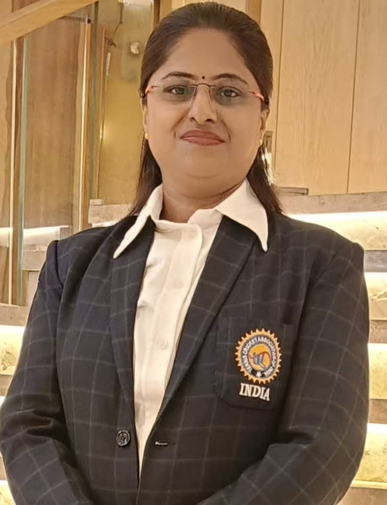
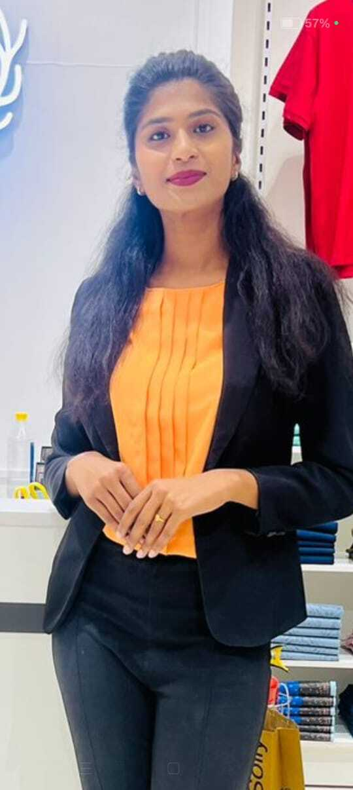

To nurture and promote tennis cricket at the grassroots level in Maharashtra, identify and develop young talent across all districts, and provide them with opportunities to excel at state and national levels.

Meenakshi Giri was born into a humble farming family in the Latur district of Maharashtra. Her parents, Uttam Shankar Puri and Laxmibai Uttam Puri, instilled good values and discipline in her from an early age. Despite being physically challenged with one leg and one hand, her father had a deep interest in sports, especially kabaddi. His struggle and love for sports had a profound impact on Meenakshi's life and laid the foundation for her sporting spirit.
After marriage, Meenakshi's life took a new turn. She married Vilas Giri and began a new life in Nashik, Maharashtra. Her husband and in-laws always encouraged her to pursue education and sports.
Meenakshi Giri began her career as a sports teacher in schools and colleges, where she inspired and guided many young students. Her dedication to sports connected her with the Tennis Cricket Association of India. She initially served as the Secretary of the Nashik district, where her working style and leadership quickly gained recognition.
Through consistent hard work and contribution, she became the State Secretary of Maharashtra, and today, she proudly serves as the National Secretary of the Tennis Cricket Association of India. Her journey from a small-town girl to a national-level leader is a living story of determination, confidence, and relentless effort.

Mayuri Ghadigaonkar, daughter of Minakshi Giri and Vilas Giri, has been interested in sports since childhood. Inspired by her parents, she has grown up with a passion for cricket and kabaddi. Her educational background includes an M.B.A., which she combines with her love for sports in her leadership role.
As the President of the Tennis Cricket Association Maharashtra, Mayuri is committed to taking the game of Tennis Cricket to rural areas, discovering emerging talents, and elevating them to the national level. Her vision extends beyond sports, aiming to create positive social transformation through athletic development.